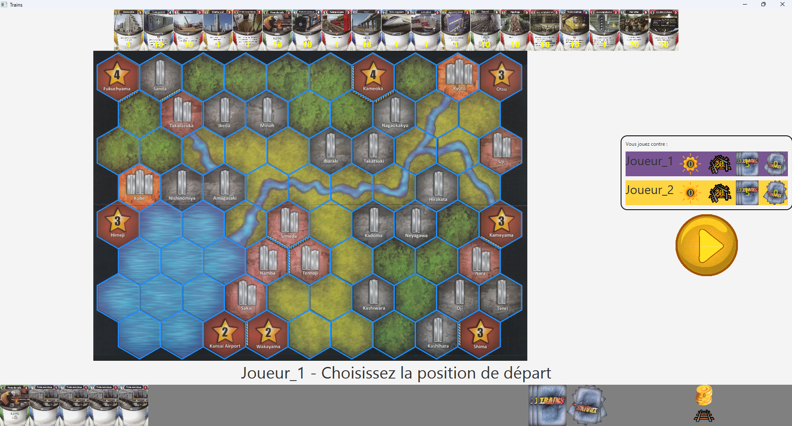

Présentation du Projet : Jeu de Société
Introduction
Ce projet a consisté à recréer le célèbre jeu de société Train en Java, en utilisant une interface graphique intuitive. Il s'agissait de mettre en œuvre des concepts avancés de programmation tout en collaborant en équipe.
Caractéristiques principales
- Développement en Java avec une interface graphique JavaFX/FMLM.
- Application des principes de conception orientée objet.
- Fonctionnalités interactives pour plusieurs joueurs.
Captures d'écran
Contributions individuelles
J'ai principalement travaillé sur l'implémentation des règles du jeu et l'intégration des fonctionnalités de gestion des scores. J'ai également participé à la conception graphique en m'assurant que l'interface soit ergonomique et accessible.
Technologies utilisées
- Java
- FXML/JavaFX pour l'interface utilisateur
Compétence 1 : Réaliser un développement d’application
- Conception et implémentation : Analyse des besoins et développement d'une application en Java respectant les principes de l’orientation objet.
- Interfaces utilisateurs : Création d’une interface graphique intuitive avec Swing, mettant l'accent sur l’ergonomie.
- Tests : Mise en place de tests pour valider le respect des règles du jeu.
Compétence 2 : Optimiser des applications
- Algorithmes : Conception d’algorithmes pour résoudre des problématiques comme le calcul des scores et le contrôle des joueurs.
- Performance : Optimisation du code pour réduire les temps d’exécution et la consommation des ressources.
Compétence 3 : Administrer des systèmes informatiques communicants complexes
Cette Compétence n'a pas été travaille pour ce projet
Compétence 4 : Gérer des données
- Base de données : Création d'une base de données pour sauvegarder les scores et les parties.
- Sécurité : Validation et protection des données des utilisateurs.
- Exploitation : Utilisation des données pour offrir des statistiques pertinentes.
Compétence 5: Conduire un projet
- Planification : Organisation des étapes clés du projet, de la conception à la livraison.
- Documentation : Création d’un guide pour faciliter la maintenance et l’utilisation du logiciel.
Compétence 6 : Collaborer au sein d’une équipe
- Coordination : Travail en groupe avec une répartition claire des tâches.
- Communication : Utilisation d’outils comme Discord pour le suivi du projet.
- Gestion des conflits : Résolution des désaccords avec des décisions collectives.